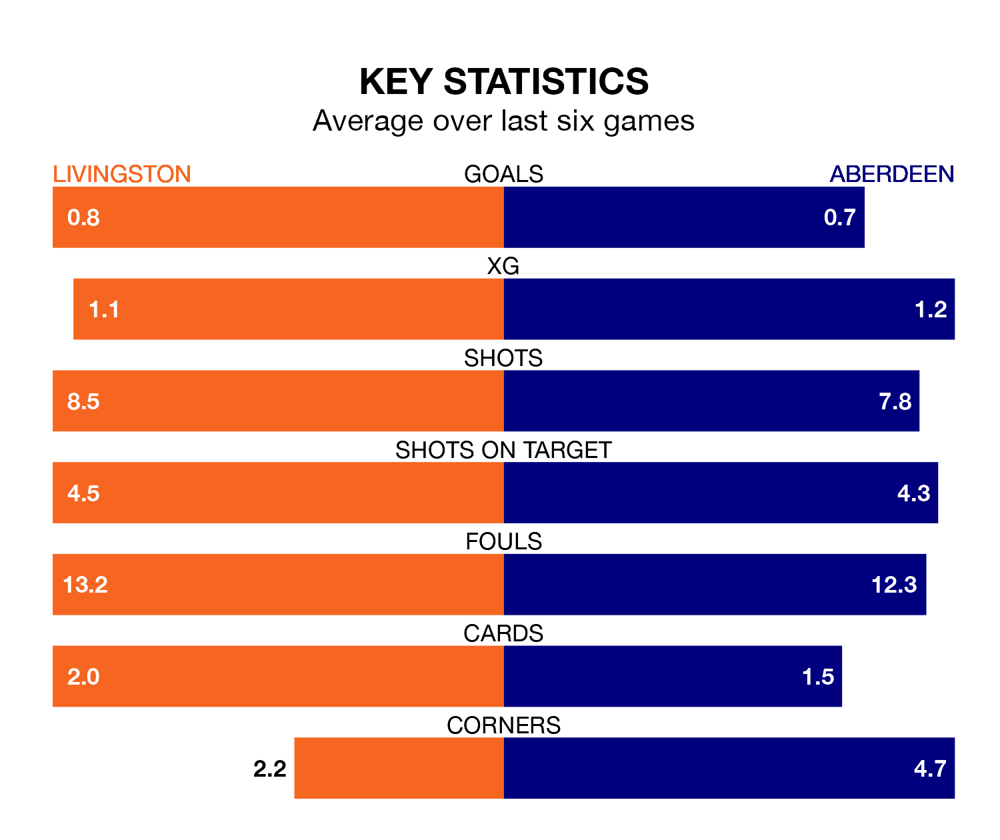

Struggling Livingston face Aberdeen at the Tony Macaroni Arena on Saturday looking to build on a win in their last league outing.
After securing all three points with a 0-3 victory over Celtic on March 31, Livingston sit bottom of the Premiership.
They travel to play an Aberdeen side ninth in the standings, who also won their last match, 2-1 against Ross County, on March 30.
In the last 10 years, Livingston and Aberdeen have played each other on 20 occasions. Livingston won four of them, Aberdeen 12, and they drew four times.
On average, Livingston scored 0.9 goals and Aberdeen 1.8 in those matches.
Their last meeting was on December 20, when Aberdeen won 2-1 at home.
In Bojan Miovski, Aberdeen have one of the league's most on-form strikers so far this season. He has notched 14 goals in 31 appearances, to sit third in the scoring charts.
His goal rate of one every 192 minutes is quicker than that of Bruce Anderson, Livingston's top scorer with a goal every 302 minutes, and a total of five goals in 28 games.
The home side are in bad form in the Premiership, with one win and a draw from their last six games.
With two wins and four losses over that period, the visitors' form is slightly better – they have taken six points from 18, compared to Livingston's four.
With 20 goals in 31 games so far this season, Livingston are the league's lowest scorers with 0.6 goals per game. And they are conceding more than average, letting in 55 goals at a rate of 1.8 per game.
Aberdeen are also below average scorers, with 1.1 goals per game, compared to a league average of 1.3. They have conceded 1.6 goals per game.
Updated: 16:41 (UTC), 04/04/24